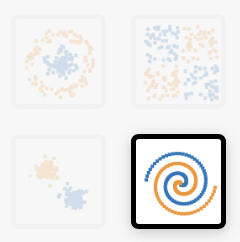
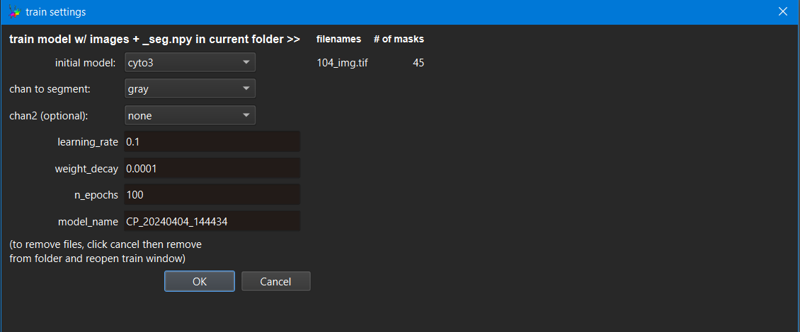

Deep Learning for Microscopy Image Analysis#
Lab authors: Damian Dalle Nogare and Florian Jug .
This file last updated 2024-04-04.
Notes from the spreadsheet on what we might want to update:
Think about adding some/all of - BioimageIO, Piximi, Accessing Cellpose via BAND
Learning Objectives#
Appreciate how Neural Networks are trained
Segmentation with Cellpose
Learn how to get to and use Google Colab
Denoising with Noise2Void in “Zero”
Bonus: Use Noise2Void in Fiji
Bonus: Segmentation with StarDist in “Zero”
Lab Data: https://bit.ly/3uEFiKg
Overview#
Neural networks can do useful things. Their deployment within user-friendly tools is, unfortunately, lacking behind. Hence, methods we would like to apply to our data are not available in Fiji or ilastik[4] quite yet. The latest methods can only be used by the ones “brave” enough to expose themselves to some amount of computer source code…
Today we will all be brave! üòä
I’m very much looking forward to hearing about your successes and struggles tomorrow during the Q&A session. Now, please take a seat, open a browser, and buckle up.
Exercise 1: Remind yourself about what we’ve heard in the lecture#
Visit https://playground.tensorflow.org and look around. What terms did you hear before, what is new, and what is confusing?
Please try to:
a. On the classification example that looks like a tiny checkerboard, try to get a test loss of 0.001 or less.


b. For the spiral-shaped classification example, try to find a network architecture with the smallest amount of nodes (neurons) that will drop below 0.01 (1%) test error.

c. Now switch from ‘Classification’ to ‘Regression’. What is going on here? Can you figure out how regression is different from classification?

d. Some other things to try if you feel it…
Add some noise to your data. What changes? Why?
Try to find a setup that overfits. How do you identify overfitting?
e. All the important terms and concepts wrt. to training and validation are somewhere on this one page. Check if there is anything that makes no sense to you and ask us
Exercise 2: Play with CellPose#
Note
Once back home, you will need this link to get started: https://cellpose.readthedocs.io/en/latest/installation.html
Here, at QI, we have taken this annoying step for you already. Hence, you will find Cellpose pre-installed on the lab computers. To start it, go to the Windows search next to the start menu, and type “anaconda”. Pick and start the option “anaconda prompt”.
Once this is opened, type in those two comments (the stuff after “>”):
> conda activate cellpose
(cellpose) > cellpose
You should now see something like
this:
Open the file easy\001_img.tif by dragging it onto the open window.
You can find this file in the folder ‘DL4MIA’ in the Lab Data share, or
download it directly via
https://drive.google.com/drive/folders/1BgoUf1f-QfcFNIsppdzTCjehkCAntbyc?usp=share_link
We need to tell cellpose (roughly) how large our objects are (you can do
so via the cell diameter) field. How might we estimate this? Keep in
mind that this diameter must be reported in pixels.
You can now segment this image by selecting one of the pre-trained
models from within the model zoo box. Try segmenting this image using
the cyto model. How good are the results?
Tip
You can toggle the visibility of segmentation masks on and off
by hitting ‘x’ on your keyboard. Similarly, you can toggle cell
outlines with the keyboard shortcut ‘z’. Alternatively you can do so
in the Drawing tab.
How well did cellpose segment your image? Where (if anywhere) did it fail? Try some different models from the model zoo box. Do any of these work better? Worse? Why might that be?
Let’s now try some more challenging data. From the link above, or from the DL4MIA folder in the lab data share, download the entire folder named ‘hard’, and place it somewhere convenient (like the desktop).
From within this folder, open the ‘test’ folder and drag the file test_img.tif to cellpose to open it. Try segmenting it as well as possible. Can you find setting and a model that work perfectly?
Spoiler, none of the models are perfectly suited to this data, but we can iteratively retrain a model from within the Cellpose GUI‚Ķ interested? Ok, let‚Äôs do it! üôÇ
Human-in-the-loop retraining#
In the ‘hard’ folder you download earlier you will find a folder called ‘train’. In this folder you will find a number of images. Open the image 104_img.tif’ in cellpose. Note that we are not going to train a model from scratch, instead we are going to finetune one of the existing models (ideally starting from one that does a pretty good job already). Choose the model that you think gave you the best segmentations in the previous part of this exercise and apply it to this image.
We are going to iteratively finetune this model, one image at a time. Once the current image is segmented well, we will open another one and repeat until results are (hopefully) making us happy! Here a little sketch:
Everytime we see a result, you can correct the segmentation errors by redrawing some of the segmentation masks. The corrected image can then be used to further finetune (retrain) the model.
You can correct errors in one of two ways:
Delete a mask by holding down the ‘control’ key and clicking on it.
Draw a new mask by right-clicking anywhere in the image and tracing an outline, ending where you began to draw.
Try correcting some of the segmentations. It might be easier if you switch between masks and outlines (use ‘z’ and ‘x’ as explained before).
Once you are happy with your corrected masks, take a look in the folder containing all of the training images. You will notice there is a new file there, called ‘hard\train\104_img_seg.npy’. This contains your corrected segmentation and will become a new bit of ground truth used during finetuning the model. But… how do you start this finetuning step?
In Cellpose, start: `models →
train new model with images and masks in folder’.
You should see a window like this one:
First, we need to select which initial model to use (in the screenshot
above, we are retraining the cyto model (but of course you may choose
to retrain any available model). You can, and should, give your new
model a name. You can also see which (corrected) images you are going to
retrain the model on under ‘filenames’, and the number of masks that
will be used for retraining in that image. Click OK whenever you are
ready to retrain and finetune the selected model!
During training you should see something like the following if you check the
console (where you started cellpose from). What is going on here? Remember
back the lecture when we discussed training steps and epochs.

Once done, Cellpose will open the next image in the folder and automatically use the freshly finetuned model to segment it (NOTE: in cellpose 3 there seems to be a bug where the new model is not being used to segment the newly loaded image. If you notice the segmentation isn‚Äôt very good, manually select your newly trained model under the ‚Äúother models‚Äù dropdown and run it). You can now repeat this process as often as needed. Cellpose will in each iteration finetune the same original model, but will do so with an ever increasing number of user labeled masks (the ones you have created). Eventually you will either loose hope or find that Cellpose‚Äôs prediction become good enough for you to be üòª!
Once you are happy with the results you are getting, apply your final model to the test data we have segmented at the start of the exercise (importantly: your model has not previously seen this image during finetuning! Why is this important again?). Is the result better than with the initial model you started with?
Using the image restoration functions#
Cellpose also has some ability to restore images by denoising and deblurring. This is used to aid the segmentation of noisy data. Let’s test it!
From the folder you downloaded earlier, open the “noisy” folder and open “convollaria.tif” in cellpose.
Try using the Cyto3 model to segment this image (you can leave the diameter at 30 pixels).
Not a very satisfying result is it?
This is partially because the data is very noisy. Let’s try to add some denoising befre we segment.
Under “Image restoration, press the “denoise” button. What do you notice about the image?
Try using the same parameters and mode to segment this image. Did it improve?
Try some other restoration modes. Try using some custom filters and see if you can improve the segmentation. What might be useful for denoising this image?
Exercise 3: First steps with Google Colab (don’t waste too much time here…)#
The following steps should get you started in no time:
Please go to https://drive.google.com and log in with your google account. If you do not have (and do not want one), please team up with somebody else who has one(or is willing to create one).
If you never used Google Colab:
click on
 >
More > Connect more apps
>
More > Connect more appssearch for “Colaboratory” and connect it to your google account
You should now see a new folder in your google drive:

Now let’s look at some existing tutorial notebook and play a bit with it:
Open https://colab.research.google.com/notebooks/intro.ipynb and try to execute the few code cells you’ll find there.
Now open a linear regression example available online and follow it until (and including) the section “Simple Linear Regression”.
Don’t waste your time today to go any further… it is of course super interesting, but totally out of scope… ;)
https://colab.research.google.com/github/jakevdp/PythonDataScienceHandbook/blob/master/notebooks/05.06-Linear-Regression.ipynb
Credit:
Note: you can save your own copy of this notebook on your own Google Drive via…

Exercise 4: First steps with ZeroCostDL4Mic#
ZeroCostDL4Mic[5] is a collection of (hopefully) self-explanatory Jupyter Notebooks for Google Colab. They are meant to quickly get you started on learning how to use deep-learning methods specifically created for microscopy image analysis.
Google Colab itself provides the computations resources needed and does so at zero cost. ZeroCostDL4Mic is designed for researchers that have little or no coding expertise to quickly test, train and use popular neural networks approaches.
Scroll down and be amazed by the amount of available methods… ;)
You could pick any method now and start playing with… but… why not start with “Noise2Void (2D)”?

Find it, download any example data, then click on “Open in Colab”. (Hint: the sample data can also be found behind the “Lab Data” link above…)You will find yourself at a page looking roughly like this:

In order to work on your own data (or also on the test data we downloaded just before), please upload it on your Google Drive (in any folder you’d like).
While uploading, you can start going through the Noise2Void notebook we opened before.
a. At some point (at Step 2.2) you will be asked to connect to your Google Drive. Please do so! üôÇ
b. Note that you will now see the content of your google drive. Click first on the “Files” icon, then go one folder up, and you should see something like this:

c. DONE! Let’s continue in the next exercise…
Exercise 5: Image Denoising with Noise2Void (in “Zero”)#
In this exercise we will denoise some data with Noise2Void. Please remember, Noise2Void is removing pixel-noises only (Poisson noise, readout noise, etc.).
If you do not have really noisy data at hand, feel free to use the example data offered on the ZeroCostDL4Mic wiki (or from within the Lab Data link from above, or just use https://tinyurl.com/DLLab-droso2d). Ideally, as a group we use a bunch of different datasets, so we have more results to look at…

Decide what data to use (see remarks above).
Copy the data to any sensible place on your Google Drive.
(Why? Data on Google Drive can be read easily and FAST by Collab…)Start the Noise2Void Colab Notebook from Zero (likely you did that already in the last exercise, didn’t you?).
Go through the notebook. The first time around this will take a while and be confusing at times. Plow through it, you will soon be happy!
Ask questions, help each other!a. Pro tip: if you are in a hurry, reduce the number of epochs to some small number, e.g. 10 or 20. Results will be much worse, but you can always crank that number up later…
b. Later today, when you are done with the exercises, you might want to re-run your favorite notebook with the suggested number of epochs. Collab will work while you have fun on your free evening‚Ķ üôÇ
Bonus Exercise: Use Fiji’s Noise2Void Plugin#
In this exercise you will use a Noise2Void plugin in Fiji. You will have to install it first.
Open Fiji.
Go to Help - Update… - Manage update sites, then check the CSBDeep update site and say Close - Apply changes.
Restart Fiji.
Download https://tinyurl.com/DLLab-droso2d and open this 2D+t tiff in Fiji.
Start the “N2V train + predict” plugin.
Figure it out‚Ķ üòâ
a. Please ask question at ANY time!
If all works out ok, you will see something like…

The training will likely be VERY slow, but to sweeten up the wait, we show you a nice preview.
Together with the result you also get the trained model for later reuse.

Try to use the trained model to denoise the same stack or any other image of your choosing.
Tip
Be sure to set the axes correctly. On the same stack, this will require you to add a third dimension which contains multiple time points. What should we use as the third axis and why is it ‘B’ when you use the same stack you used for training?
Bonus Exercise: Image Segmentation with StarDist (in “Zero”)#
Now that you have experienced how to use ZeroCostDL4Mic Collab notebooks, switch it up, do some instance segmentation! We suggest the StarDist notebook, but if you feel adventurous, choose something else you find most interesting in the context of your own research.

Go through the notebook you chose. And again:
Ask questions, help each other!
Tip
Reduce the number of epochs to some small number to save yourself long waiting times!
Later today, when you are done with the exercises, you might want to re-run your favorite notebook with the suggested number of epochs. Collab will work while you have fun on your free evening‚Ķ üôÇ